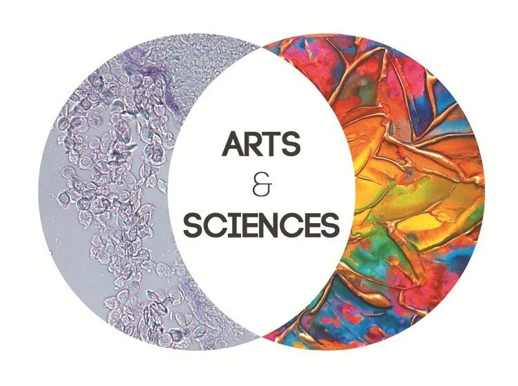
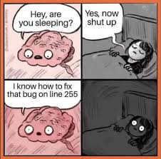
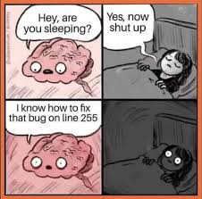

Personal Blog
My motivation and study choice activities
I attended webinars, contacted related agencies (apv, unify), contacted current students at the HZ, read a lot of forums, went through all of the information on the official site of the university.

After graduating
In four years' time I hope to become a software engineer in the medical field because biology is also a passion of mine. My plan B is game development since I also consider myself to be a creative person and have experience with a lot of different creative media.

Personal SWOT analysis
This analysis shows my strong suits and some of my habits and characteristics which can lead to some problems later on. Enjoy me overanalysing myself for the next 4 sections.

Programming experience and "hard skills"
I already have some experience in html, css and a tiny bit of js (you can see my project in the portfolio section on my home page!). I have completed three courses on python, as well.This is the language I have most experience in and it is what made me fall in love with programming (thanks for inspiring me, dad).
 

Hey, I found a cool paper on AI in clinical genetics:
Artificial intelligence (AI) has been growing more powerful and accessible, and will increasingly impact many areas, including virtually all aspects of medicine and biomedical research. This review focuses on previous, current, and especially emerging applications of AI in clinical genetics.